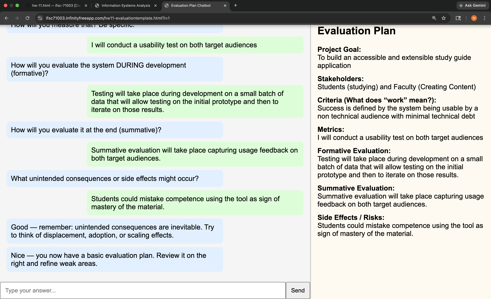
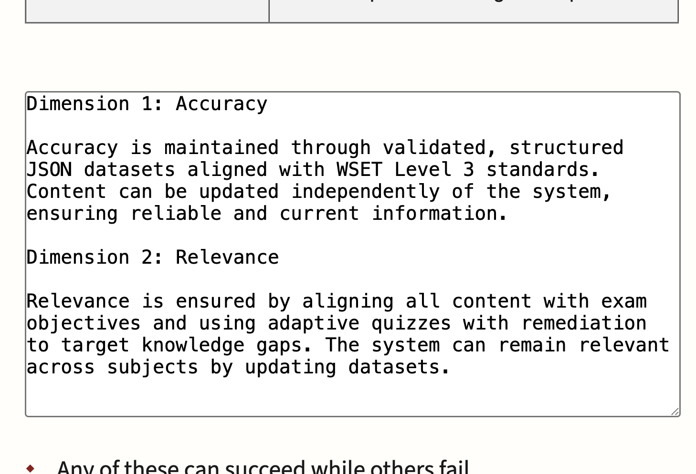
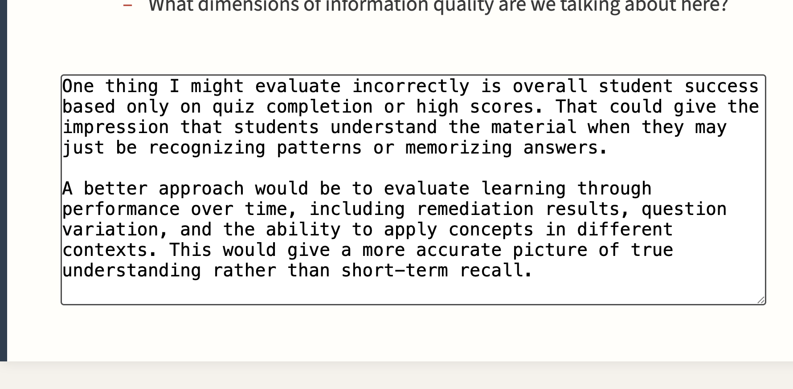
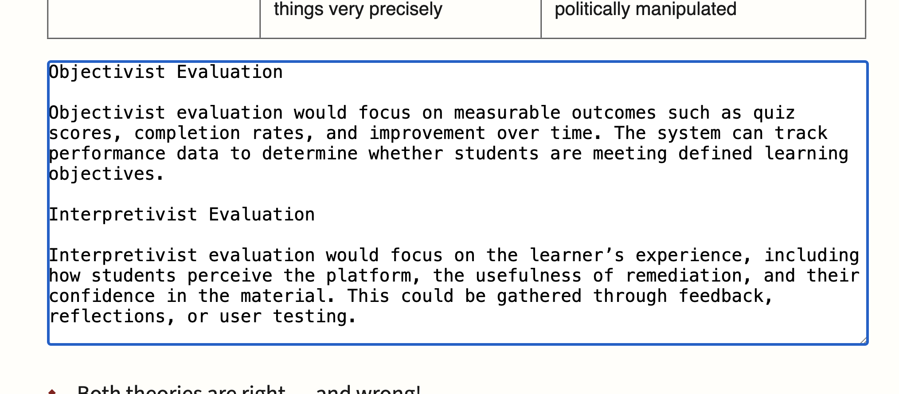
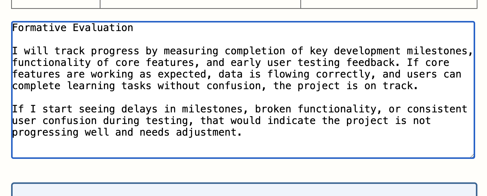
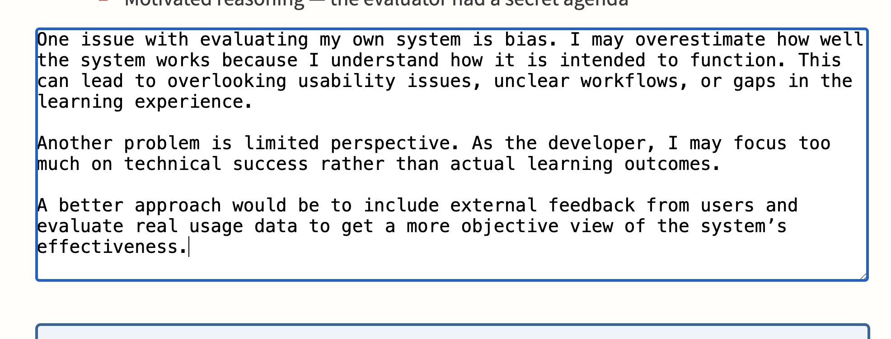

Module 11
Due: 4.14.2026
1(i) For four of your JavaScript command demos in your demo page, demo a near equivalent in PHP. Write the code of the PHP being demoed, then demo it.
1(ii) Test the demo page in your sandbox. Does the PHP section work? Why or why not? Write your answer by hand on a piece of paper and upload a cell phone photo of the paper.

(a) Evaluation I. This is about your final project, however, your answer must be individual work and not copied from another team member if you are doing it as a group. As always you can discuss things, but not paste or paste-and-change from another student or the web.

Evaluation II. The course notes on evaluation contain five textareas. Fill them in about your project. Drag and drop the textarea corners to resize them to contain your answer. Take a full-screen screenshot of each one of them and upload them as the answer to this question.





Make more progress on the project.
Final Project Link